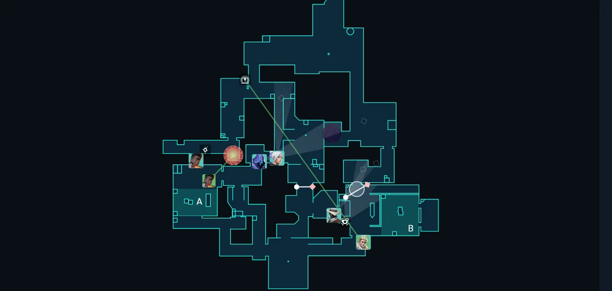
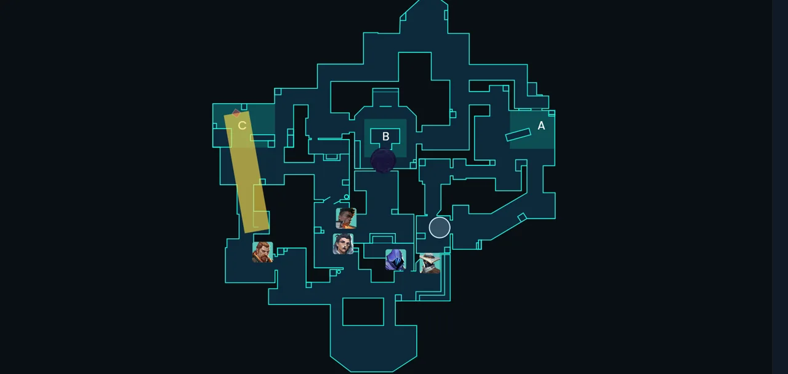

Step 2 of 3
Movement and positioning

Explaining the importance of movement and positioning
Movement and positioning decide many fights in VALORANT before the first shot is fired. Standing still in the wrong place makes you an easy target, while a planned route lets you see first, trade safely and choose the fights you want.
Good movement is also about accuracy. Moving and shooting at the same time makes your bullets less precise, so stop before you fire. Good positioning gives you cover, clear sightlines and a safe way to fall back when a fight goes badly.
Think of each round as a plan: where you start, where you need to be when contact begins, and how you will get there without being exposed. Practise these habits in every match and they quickly become second nature.
Attacking
Who goes first / how to position on attack
- Agree on who goes first before the round starts. This is usually the player with the strongest entry tools, and the rest of the team follows once that player has made contact.
- Wait for your entry player's utility or a teammate's call before you move into a site. Peeking alone into a fully held angle is one of the most common ways to lose a round.
- Don't stack on one path. Spreading out forces defenders to split their attention and makes it harder for them to cover every angle.
- Stay within trading distance of your team, so a teammate can avenge a death quickly.
- Plant in a spot with cover, then hold angles that protect the spike while it is ticking.

Defending
Defence positioning
- Set up crossfires, where two players watch the same approach from different angles. Don't line up in a straight line where one shot can reach you both.
- Don't stand in the first line the attacker sees. Hold a spot slightly off the doorway so you can shoot first while staying harder to spot.
- Rotate on information, not guesses. Use sound, a teammate's call or an ability reveal before you leave a site, so you never leave it empty.
- Don't hold one angle forever. Peek briefly to make attackers reveal themselves, then step back into cover.
- Use utility to slow the attack, then fall back to a safe spot. Delaying the push gives your team time to rotate and regroup.